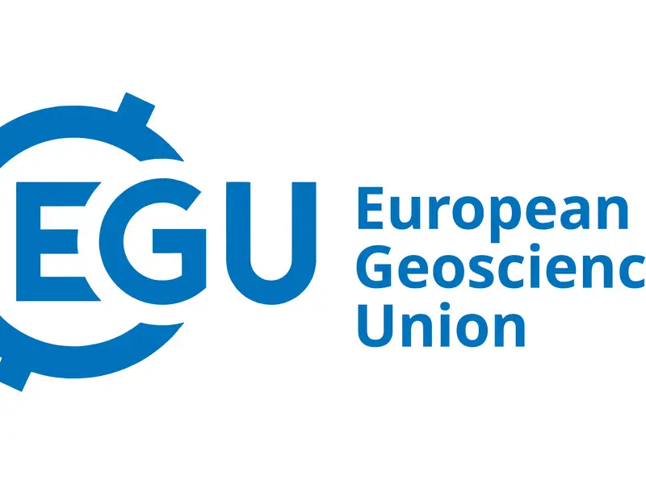
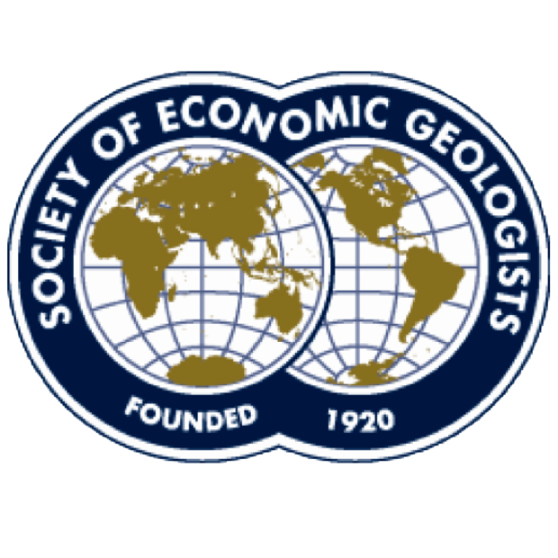
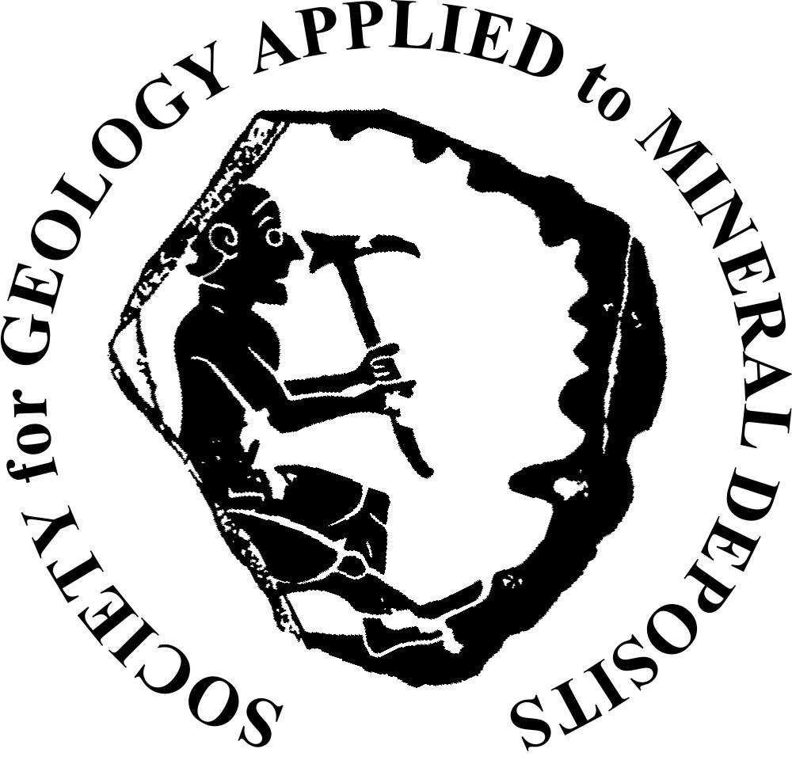
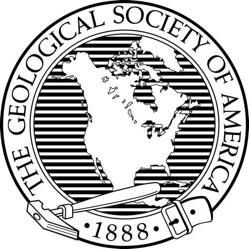

EarthWorks
The main geoscience board. PhDs, postdocs, lectureships, industry.
Search EarthWorksThe short version of what I tell students who ask.
Start here
What would you happily read about for four years? Ore deposits, volcanoes, isotopes, whatever it is.
Search Google Scholar for the last five years of papers. The names that keep coming up are your potential supervisors.
Set Google Scholar alerts on those people and a few keywords. Check their group pages: new projects often show up there first.
A short email: who you are, what interests you in their work, CV attached. Some projects are shaped around a good applicant.
Where positions are posted
The main geoscience board. PhDs, postdocs, lectureships, industry.
Search EarthWorks
Mostly European PhDs and postdocs in Earth sciences.
Search EGU JobsMostly North American faculty and postdoc posts.
Search AGU jobsFunded PhD projects, mainly UK and Europe.
Search geology PhDsUsing them
Money

Research grants for students in economic geology, plus fellowships for first-year graduate students.
SEG student funding
Pays for travel and analyses at a lab run by an SGA member.
SGA Mobility Grant
For Master's and PhD research in any area of geology.
GSA grantsDeadlines and eligibility change every year. Check the current call.